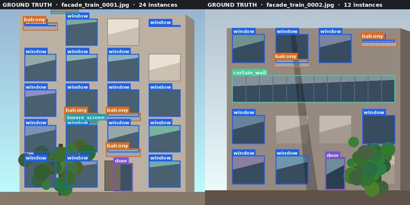
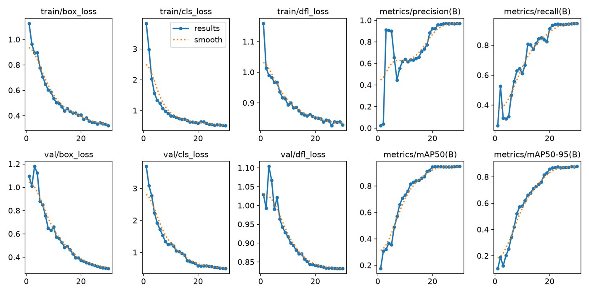
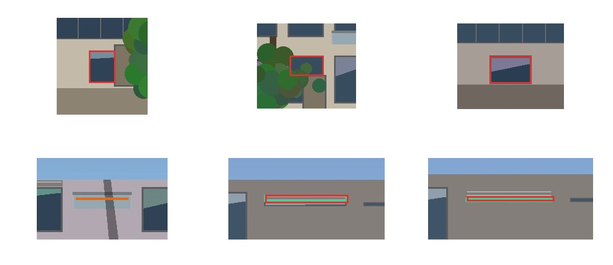
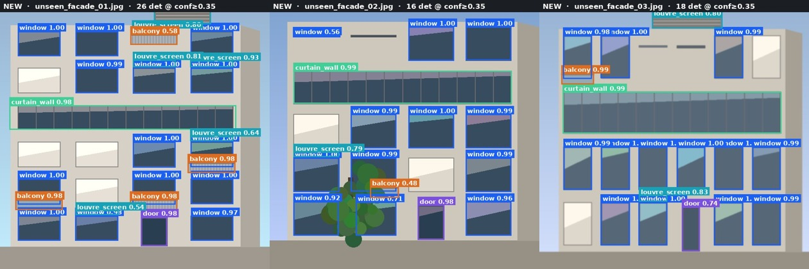

A YOLOv8 detector that reads building-envelope elements from photographs and rendered elevations — so a Value Engineering assistant can estimate envelope composition for a building it has no BIM model of.
Continuous Value Engineering needs to know what is on the façade. Three situations put that truth outside the model:
Why the envelope. Typically 15–25 % of construction cost and consistently the first package opened in a VE exercise. An early, cheap, repeatable read on envelope composition is worth more than a more accurate read on almost anything else.
Recover Window-to-Wall Ratio to within ±10 % of a human's reading of the same image, on frontal-to-30°-oblique daylight elevations of 3–10 storey buildings, in under 2 seconds per image.
Not a quantity take-off. Not a compliance check. Not a BIM-vs-reality verifier. Not a people-watching system — there is no person class, by design.
Baseline check (Session 1). Stock COCO
YOLOv8 on a façade detects no windows, no curtain wall and no balconies. It is not
inaccurate — it is answering a different question. COCO has toothbrush;
it has no curtain_wall.
| id | class | the discriminating test |
|---|---|---|
| 0 | window | bounded by opaque material on all four sides |
| 1 | curtain_wall | can I trace unbroken glass across it? |
| 2 | door | at grade and enterable |
| 3 | balcony | occupiable depth, not a guard rail |
| 4 | louvre_screen | permanent, not scaffold netting |
1. No reflections — a mirrored window double-counts the envelope.
2. No neighbouring buildings — one subject per image.
3. Partial and occluded elements are labelled, visible extent only, 8 px floor.
Boxes are drawn to the outer frame edge — the frame is part of the purchased unit, therefore part of the cost. Class ids are positional, so the loader refuses to train if a dataset's order disagrees with the config.

Ground truth as applied — generated from the committed labels, not screenshotted.
Helped on curtain_wall, door, balcony — large convex regions
with strong edges. Failed on the window/curtain_wall boundary:
SAM sees edges, not the contract. It segments mirror-glass spandrels beautifully — and
they must not be labelled at all.
| class | inst. | P | R | mAP50 | mAP50-95 |
|---|---|---|---|---|---|
window | 316 | 0.980 | 0.951 | 0.985 | 0.951 |
curtain_wall | 37 | 0.980 | 1.000 | 0.995 | 0.976 |
door | 24 | 0.952 | 0.830 | 0.821 | 0.809 |
balcony | 66 | 0.994 | 0.970 | 0.965 | 0.897 |
louvre_screen | 48 | 0.971 | 0.979 | 0.971 | 0.764 |

Why mAP50-95 is the headline. The VE read-out is
computed from box area. A box 20 % too large scores a clean hit at IoU 0.50
and produces a 20 % cost error. mAP50 is blind to exactly the failure that costs
this project money.

ground truth wrong prediction missed instance
| error type | count | % of errors |
|---|---|---|
| False negative | 23 | 56.1 % |
| False positive | 9 | 22.0 % |
| Localization error | 6 | 14.6 % |
| Class confusion | 3 | 7.3 % |
The finding.
louvre_screen scores mAP50 0.971 and mAP50-95
0.764. The model finds almost every louvre screen and boxes almost none
tightly — worst case +31 % box area. Every one is a true positive at
IoU 0.50. A project quoting mAP50 would call this class solved. It is the worst.
Imbalance is a cost bias, not noise.
At 13.8 : 1, door (96 instances vs 1 341 windows) is worst on every
measure. Both door→window confusions had near-perfect boxes
(IoU 0.976, 0.970) — localised right, named wrong. Second-highest unit rate, so
missing one in six understates entrance cost systematically.
door 96 → ~300 instances. Targeted
collection, not oversampling.2026-09-20 19:57 UTC · restart-and-run-all from a clean
checkout · CPU only, no GPU · 499 s for the full 30-epoch
contract · ultralytics 8.4.157 · completed with no manual intervention.
Expected: 2–4 min on a Colab T4, 8–12 min on CPU.
The default dataset source is synthetic,
so the notebooks run end to end with no account, no API key and no GPU.
That is the reproducibility requirement taken literally. Point DATASET_SOURCE at
Roboflow for real results — the verification banner disappears automatically.
One config file. Every parameter the README quotes lives in
src/config.py and is read from there by the notebooks. There is no second place
to change them, so the documentation cannot drift from the run.

Unseen images — neither in training nor validation. "Never show a client a training image."
Screening only. It produces False Negatives. It must NOT be the sole verifier for
life-safety decisions.
Privacy by design — no person class, no vehicle class. Data
minimisation applied at the class contract, so the model is structurally incapable
of identifying anyone. No client or employer imagery.
Apache-2.0 over AGPL-3.0 upstream — fine-tuned YOLOv8
weights inherit Ultralytics' AGPL. Commercial deployment needs compliance or an
Enterprise Licence.